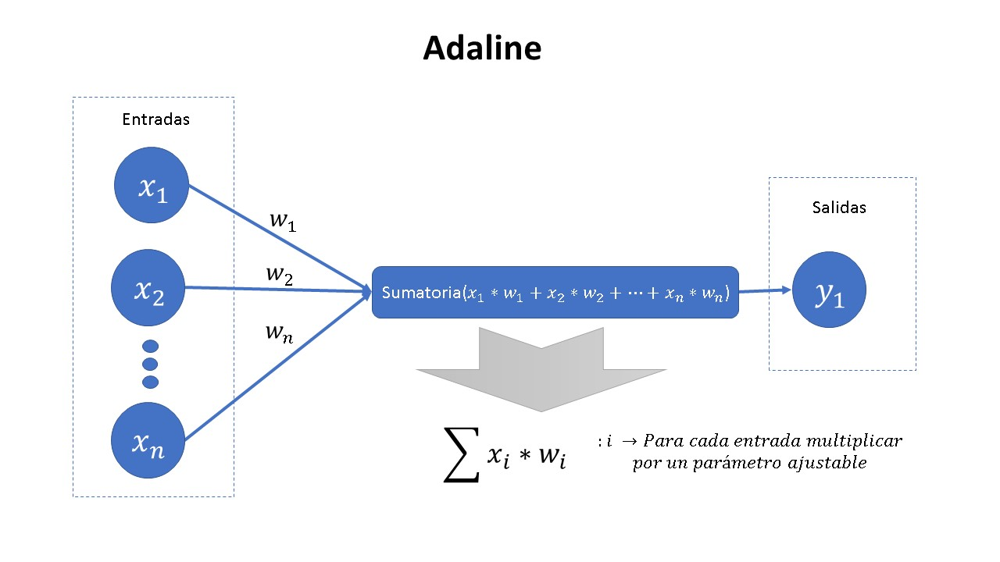

Una vez aprendido el contenido de control analógico y control digital, es posible aplicar conocimientos de algoritmos inteligentes (Redes neuronales) para que este tome acciones adicionales de calibración de parpametros, posiblemente ajustandolos automaticamente. Esto con la necesidad de aplicar soluciones a problemas de control complejos o que cambian con el tiempo.
Esta es una red nuronal básica, y se encarga de separar los datos por una linea recta en caso de tener 2 entradas, analogamente para dimensinones superiores se podría interpretar como la separación producida por un hiperplano.
 Figura 1. Estructura de red Adaline